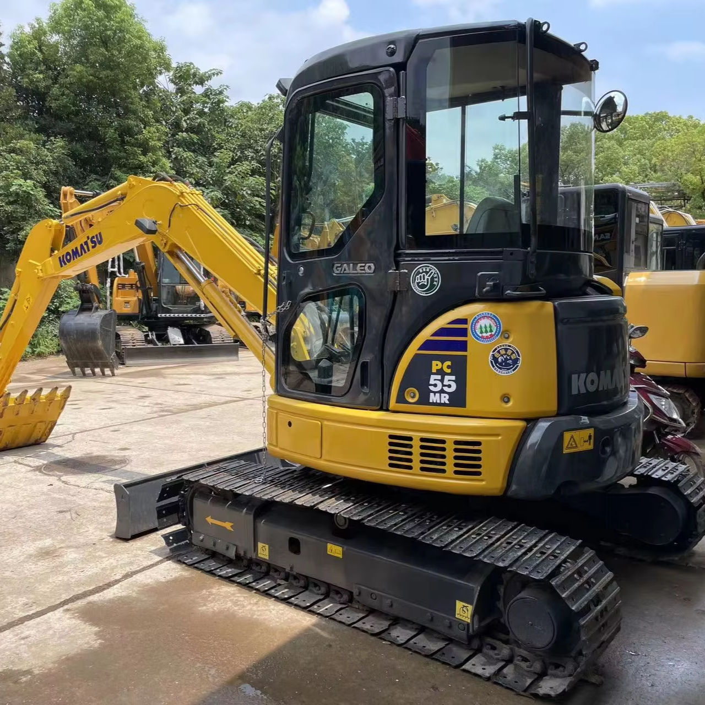

Refurbished Komatsu PC55 Excavator
The Komatsu PC55 is a compact yet powerful hydraulic excavator that strikes a balance between performance and size, making it ideal for small to medium-scale construction projects, urban excavation, and trenching. Known for its exceptional durability and fuel efficiency, the PC55 is a preferred choice for businesses looking to optimize their operations without compromising on capability. A refurbished Komatsu PC55 combines the robust design of the original machine with the cost savings of purchasing a pre-owned, expertly restored unit.
Honestly, it's almost impossible to buy a brand new excavator from China. They either don't exist or are made in China. If a Chinese seller tells you their Caterpillar/Komatsu/Volvo/Kobelco/Hitachi is brand new, they're lying. Therefore, a refurbished excavator is your best bet.

Here are the detailed specifications for a refurbished Komatsu PC55MR-3 or PC55MR-5 mini excavator:
Operating Weight and Dimensions
- Operating Weight: 5,200–5,500 kg
- Overall Length: ~5.5–5.7 meters
- Overall Width: ~1.96–2.0 meters
- Overall Height: ~2.55–2.6 meters
- Tail Swing Radius: ~1.3–1.5 meters (minimal radius design)
- Ground Clearance: ~320–350 mm
- Track Width: 400 mm standard
Engine and Powertrain
- Engine Model: Komatsu 4D88E-6 or SAA4D88E-6 (Tier 3 compliant)
- Rated Power Output: ~29.5–33.5 kW (40–45 hp) @ 2,200 rpm
- Maximum Torque: ~140–160 Nm
- Fuel Tank Capacity: ~70–75 liters
- Travel Speed: 2.8–4.8 km/h
- Swing Speed: ~9.5 rpm
- Gradeability: Up to 30°
Hydraulic System
- Main Pump Type: Variable displacement axial piston pump
- Flow Rate: ~2 × 60–70 L/min
- System Pressure: Up to 24.5 MPa
- Hydraulic Oil Capacity: ~60–70 liters
- Boom Cylinder Bore: ~90 mm
- Arm Cylinder Bore: ~75 mm
- Bucket Cylinder Bore: ~65 mm
Performance Metrics
- Bucket Capacity: 0.16–0.18 m³ (SAE heaped)
- Max Digging Depth: ~3.8–4.0 meters
- Max Reach (Horizontal): ~5.8–6.0 meters
- Max Dump Height: ~3.9–4.1 meters
- Bucket Digging Force: ~35–38 kN
- Arm Digging Force: ~20–22 kN
Cab and Operator Features
- Cab Type: ROPS/FOPS certified (enclosed or canopy)
- Display: LCD monitor with diagnostics and fuel tracking
- Controls: Pilot joystick controls with auxiliary hydraulic circuit
- Comfort: Adjustable suspension seat, optional air-conditioning
- Visibility: Wide glass area, LED work lights, optional rear-view camera
Smart Features and Efficiency
- Fuel Efficiency: Auto idle, load-sensing hydraulics
- Emissions Control: Tier 3 compliant (no DPF or SCR)
- Telematics: KOMTRAX ready (optional)
- Transportability: Easily trailerable under 6-ton class
Attachments Compatibility
- Standard Bucket: 0.16–0.18 m³
- Optional Tools: Hydraulic breaker, auger, compactor, ripper
- Quick Coupler: Manual or hydraulic options available
Refurbishment Scope
Refurbished PC55 units typically include:
- Engine Overhaul: Cylinder head, injectors, turbo, seals
- Hydraulic Restoration: Pump recalibration, valve block testing, hose replacement
- Electrical Diagnostics: Monitor, sensors, wiring harness
- Cab Reconditioning: Seat, joysticks, HVAC, repainting
- Structural Repairs: Boom/bucket welding, bushing replacement, undercarriage rebuild
Overview of the Komatsu PC55 Excavator
The Komatsu PC55 is part of Komatsu's extensive range of mini and compact excavators, built to handle various jobs in confined spaces, whether in residential construction, roadworks, or landscaping. With its compact size and powerful engine, it provides operators with the flexibility to work in tight spaces while still delivering impressive digging and lifting capabilities.
Key Specifications of the Komatsu PC55
-
Operating Weight: Approximately 5,500 kg (12,125 lbs)
-
Engine Power: 39.6 kW (53 hp)
-
Max Digging Depth: 3.8 meters (12.5 feet)
-
Max Reach: 5.7 meters (18.7 feet)
-
Bucket Capacity: 0.14–0.2 cubic meters (5–7 cubic feet)
-
Travel Speed: 5.3 km/h (3.3 mph)
-
Fuel Tank Capacity: 110 liters (29 gallons)
The PC55 is engineered to provide the right amount of power for its size. With its solid hydraulic system, it's capable of performing digging, lifting, and grading tasks effectively, even in challenging conditions. Its small footprint and exceptional maneuverability make it especially useful in urban environments, where space is often limited.
Engine and Performance
The engine of the Komatsu PC55 is designed for efficient operation, offering a balance between power and fuel efficiency, which is essential for both short-term jobs and extended daily use.
-
Engine Power: Powered by a Komatsu S4D95 engine, the PC55 delivers 53 horsepower (39.6 kW). This engine is reliable and provides enough power to handle most tasks, including digging, trenching, and lifting.
-
Fuel Efficiency: The PC55 is designed to minimize fuel consumption while maximizing performance. With the right engine management system, operators can achieve optimal fuel efficiency, reducing operational costs for businesses in the long run.
-
Emissions Compliance: The PC55's engine is also built to comply with modern emissions standards, helping operators avoid fines and penalties in regions with strict environmental regulations.
Hydraulic System and Performance
The hydraulic system of the Komatsu PC55 is designed to provide maximum power and precision for the machine’s tasks, ensuring that the excavator can handle various applications efficiently.
-
Powerful Hydraulic System: The PC55 features a powerful hydraulic system that ensures smooth and responsive operation for digging and lifting. The hydraulics are designed to minimize power loss and reduce fuel consumption, ensuring that the machine performs efficiently in demanding tasks.
-
Load-Sensing Hydraulic System: This system adjusts hydraulic pressure based on load demands, ensuring that energy is used efficiently. This feature improves fuel consumption and reduces wear and tear on the hydraulic components.
-
Precise Control: The precise control offered by the hydraulic system makes it easier for operators to work with heavy materials or dig into challenging soil conditions. Whether you are handling loose dirt or digging in rocky environments, the PC55 is capable of performing with high efficiency.
Compact and Maneuverable Design
One of the standout features of the Komatsu PC55 is its compact size, allowing it to work in tight spaces where larger excavators might struggle. This makes it ideal for urban construction sites, landscaping projects, and other areas where space is limited.
-
Compact Dimensions: With a width of just 2.2 meters (7.2 feet) and a length of 5.8 meters (19 feet), the PC55 is a compact machine designed to work in confined spaces, whether between buildings or in narrow passages.
-
Low Tail Swing: The PC55 features a low tail swing design, which allows the rear of the machine to remain within its overall footprint while operating. This feature is crucial when working close to walls, fences, or other obstacles that might be in the work area.
-
Maneuverability: Its compact design also makes it highly maneuverable on worksites, where operators need to move the machine in tight circles or around corners without risking damage to the machine or surrounding structures.
Operator Comfort and Safety
The Komatsu PC55 is designed with operator comfort and safety in mind. The cabin is spacious, well-ventilated, and provides excellent visibility, ensuring that operators can work comfortably and safely.
-
Ergonomically Designed Cabin: The cabin is spacious and includes an adjustable seat, simple controls, and excellent visibility. The layout of the controls allows for easy operation, which reduces operator fatigue during extended hours on the job site.
-
Improved Visibility: The PC55 provides operators with a wide view of the work area, reducing blind spots and improving safety. This is essential when working in close quarters or when handling heavy materials.
-
Safety Features: The machine is equipped with safety features like rollover protective structures (ROPS), falling object protective structures (FOPS), and safety switches. These systems are designed to keep the operator safe from potential hazards on the job site.
Benefits of Choosing a Refurbished Komatsu PC55
Opting for a refurbished Komatsu PC55 offers significant advantages, especially for businesses that need a cost-effective solution without sacrificing the quality or performance of the equipment.
-
Cost-Effective: A refurbished Komatsu PC55 can save businesses 30-40% compared to purchasing a new model, making it a highly cost-effective choice for many projects.
-
Restored to Like-New Condition: Refurbished models go through a comprehensive restoration process that includes checking and repairing major components like the engine, hydraulic system, and undercarriage. This ensures that the machine functions like new, while offering substantial savings.
-
Extended Lifespan: Refurbishing a quality machine like the PC55 extends its operational life, making it a great investment for businesses looking to maximize equipment usage.
-
Warranty and Support: Many refurbished PC55 excavators come with warranties, offering peace of mind to buyers who may be concerned about long-term performance and reliability.
Maintenance Tips for the Komatsu PC55
To ensure the Komatsu PC55 continues to operate smoothly and efficiently over time, regular maintenance is essential.
-
Hydraulic System Maintenance: Regularly inspect hydraulic fluid levels, and change filters and seals as needed. Keeping the hydraulic lines clean is crucial for preventing leaks and maintaining performance.
-
Engine Maintenance: Check and replace air filters and oil regularly, and ensure that the cooling system is functioning properly to prevent overheating.
-
Undercarriage Inspection: Regularly inspect the tracks and rollers for wear. Keep the undercarriage clean, and replace worn parts to avoid further damage.
-
Routine Inspection: Perform general inspections at regular intervals to catch any signs of wear, cracks, or other issues early. This will help you avoid major breakdowns.
Conclusion
The Komatsu PC55 is a compact and efficient excavator designed to handle a variety of tasks in small and confined spaces. Its combination of power, fuel efficiency, and maneuverability makes it an excellent choice for urban construction, landscaping, and general excavation. A refurbished Komatsu PC55 provides a cost-effective alternative to purchasing new equipment, delivering reliable performance without the high upfront costs. With the right maintenance and care, the PC55 is sure to be a valuable asset for businesses looking to improve their productivity and efficiency in the field.
Our Commitment
- 2 years / 4000 hours warranty.
- EPA certified.
- No sweatshop labor.
Contacts

- [email protected]
- Youtube Instagram Facebook
- Navigation: G206 (Sishu Bridge) in Changfeng County, Hefei City, Anhui Province, 200 meters north to the east